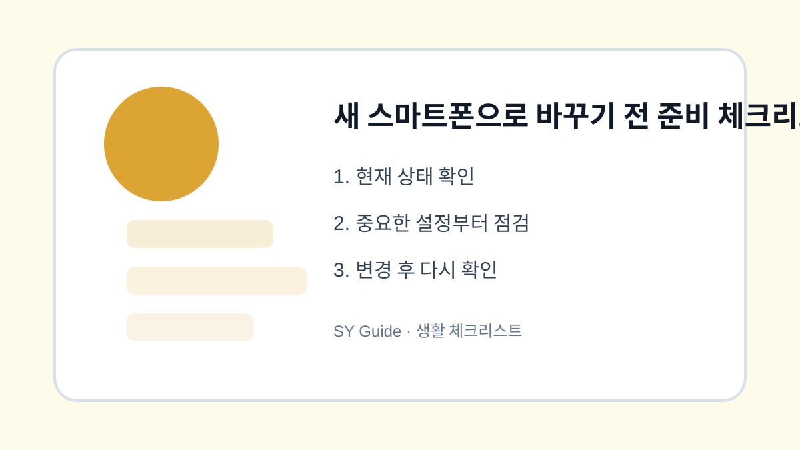

새 스마트폰으로 바꾸기 전 준비 체크리스트
새 스마트폰을 받기 전에 사진, 연락처, 인증 앱, 금융 앱, 메신저 백업을 미리 확인하는 순서입니다.

새 스마트폰으로 바꾸는 날에는 설레지만, 준비 없이 진행하면 사진이나 대화 기록이 빠질 수 있습니다. 특히 인증 앱, 금융 앱, 카카오톡 대화처럼 단순 복사만으로 옮겨지지 않는 항목이 있습니다. 기기 변경 전날 체크리스트를 따라 확인하면 불필요한 당황을 줄일 수 있습니다.
사진과 연락처 백업 확인
사진은 클라우드 백업 완료 여부를 확인하고, 중요한 사진은 PC나 외장 저장장치에 한 번 더 복사합니다. 연락처는 Google 계정이나 iCloud에 저장되어 있는지 확인합니다. 휴대폰 저장소에만 있는 연락처는 기기를 바꿀 때 빠질 수 있습니다.
인증 앱과 금융 앱 준비
은행 앱, 카드 앱, 간편 인증 앱은 새 기기에서 다시 본인인증이 필요할 수 있습니다. 공동인증서나 보안매체가 필요한 경우도 있으니 미리 필요한 신분증, 계좌 정보, 인증 수단을 준비합니다. 인증 앱을 쓰고 있다면 이전 방법도 확인합니다.
| 항목 | 확인 내용 | 시점 |
|---|---|---|
| 사진 | 백업 완료 | 전날 |
| 연락처 | 계정 동기화 | 전날 |
| 카카오톡 | 대화 백업 | 변경 직전 |
| 금융 앱 | 인증 수단 준비 | 당일 |
상황별로 놓치기 쉬운 마지막 점검
- 사진과 동영상 백업 완료 확인하기
- 연락처가 계정에 동기화되어 있는지 보기
- 카카오톡 대화 백업을 최신으로 만들기
- 인증 앱과 금융 앱 이전 방법 확인하기
- 기존 기기는 새 기기 정상 작동 후 초기화하기
기기 변경은 순서가 중요합니다. 새 스마트폰에서 필요한 자료가 모두 보이는지 확인하기 전에는 기존 기기를 초기화하지 않는 것이 가장 안전합니다.
새 스마트폰으로 바꾸기 전 준비 에서 우선순위를 정하는 법
새 스마트폰으로 바꾸기 전 준비 은 모든 항목을 한 번에 처리하기보다 연락, 인증, 결제, 백업처럼 문제가 생겼을 때 불편이 큰 항목부터 확인하는 편이 좋습니다.
새 스마트폰으로 바꾸기 전 준비 점검 후 다시 볼 항목
설정을 바꾼 직후에는 문제가 없어 보여도 다음 날 알림, 동기화, 자동 결제, 위치 공유 상태가 달라질 수 있습니다. 하루 정도 실제 사용 상태를 지켜보세요.
새 스마트폰으로 바꾸기 전 준비 관련 공식 확인처
확인 기준: 2026.06.27 · 작성/검토: SY Guide 편집팀 · 정정 문의: issuebara@gmail.com